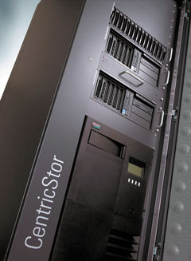

Олег Спиряев
Современные технологии позволили многим компаниям существенно повысить показатели эффективности, продуктивности и прибыльности. Но сегодня перед ИТ-директорами и специалистами встает чрезвычайно сложная проблема - огромный объем распределенных данных, циркулирующих в информационных системах. Известно, что за последние годы объем хранимой на серверах информации резко возрос, счет идет на сотни гигабайт даже в небольших компаниях. Невозможность эффективно управлять данными может негативно сказаться на прибыльности предприятия и ограничить его способность к росту. Поэтому передача, хранение, защита данных и управление ими в условиях постоянного роста их объема и усложнения структуры стали одной из основных проблем бизнеса на сегодняшний день.
Система резервного копирования - это неотъемлемая часть стабильной и надежной информационной системы компании. Резервное копирование данных в той или иной степени применяется сейчас практически повсеместно и выполняется по определенному расписанию, в зависимости от характера информации и структуры компании. Существует несколько принципов построения и организации подобных систем. Естественно, по стоимости все эти решения существенно различаются, а их выбор зависит от целей, которые ставит перед собой компания, от стоимости самих данных, размера предполагаемых денежных вложений, а также стоимости одной минуты простоя информационной системы.
Конечно, вопросы стратегии в сфере обеспечения страхового копирования данных не решаются только техническими службами компании. Точно так же на самом высоком уровне должно быть принято решение, какая именно информация представляет наибольшую ценность и как долго требуется хранить копии тех или иных данных. Однажды выбрав стратегию резервирования, руководству важно найти время для того, чтобы описать ее и сделать неотъемлемой частью технической политики своей компании. Выбор систем резервирования весьма широк, но в любом случае, принимая решение, приходится идти на компромисс. В результате может потребоваться реализовать несколько стратегий резервирования, а значит, обеспечить поддержку самых разных накопителей, пакетов специализированных программ и типов носителей информации. Например, предприятию может потребоваться резервное копирование своей финансовой информации, куда войдут все файлы бизнес-приложений, распределенные базы данных, в которых хранится такая информация, а также отчетная документация и презентации для финансового анализа.
Организация процесса резервного копирования и архивирования - это неотъемлемая часть политики защиты информации. От правильного выбора технических и программных средств резервного копирования и архивирования, от определения оптимальной топологии подключения этих устройств зависит эффективность защиты и восстановления данных, жизненно важных для функционирования организации. Лучшую эффективность и защиту инвестиций обеспечивают автоматизированные системы резервного копирования и архивирования информации, поддерживающие автоматическое ведение этих процессов со всех необходимых серверных систем и ПК на устройства с автоматической сменой носителей. Заметим, что выбор системы резервного копирования или архивирования далеко не прост. Он предполагает учет множества параметров, связанных как с составом парка компьютеров на предприятии и имеющегося ПО, так и с возможностями аппаратного обеспечения резервирования и затратами на эксплуатацию всего комплекса резервного копирования.
Преимущества лент
В настоящее время нет недостатка в системах страхового копирования данных, но реально выбор делается между устройствами с последовательной организацией данных (ленточные накопители) или с произвольным доступом (дисковые накопители). При выборе следует принять во внимание такие факторы, как тип требуемого резервирования и восстановления информации, номинальная скорость, максимальная емкость носителей и устройства в целом, начальная стоимость устройства и стоимость владения им, надежность всей системы, а также стоимость самого носителя и т. д.
Ленточные накопители до недавнего времени оставались наиболее универсальным, дешевым и, как следствие, предпочтительным средством защиты целостности данных. Отметим также, что внешние накопители на магнитных лентах часто могут использоваться в системах иерархического хранения данных (Hierarchical Storage Management, HSM). В таких системах медленные, но емкие внешние накопители обычно выступают в качестве второго или третьего уровня хранения. Дело в том, что концепция структурированного хранения подразумевает организацию иерархической структуры устройств хранения информации. Например, на первом (верхнем) уровне находятся жесткие диски, а на нижних уровнях - оптические и/или ленточные накопители. При этом часть жесткого диска и магнитооптические и/или ленточные накопители объединяются в единый логический диск, на котором обычно хранят редко используемую информацию.
Система структурированного хранения может включать как устройства оперативного доступа, работающие без вмешательства человека (жесткие диски и библиотеки магнитооптических дисков или ленточных носителей), так и одиночные накопители, в которых носители заменяет оператор вручную. Назначение структурированного хранения - удешевить процесс хранения редко используемых данных. При физическом перемещении файла между устройствами разных уровней структурированного хранения его логическое местоположение в файловой системе сервера остается неизменным. Приложения обращаются к файлам по их логическому местоположению. На носители более низких уровней обычно перемещаются файлы, к которым пользователи не обращались в течение определенного времени. Перемещение файлов в системе структурированного хранения организуется таким образом, чтобы объем свободного пространства на дисках серверов поддерживался на заданном уровне.
Автоматизировать работу системы резервного копирования или повысить скорость передачи данных в той или иной степени позволяют несколько типов устройств: стекеры, автозагрузчики, массивы RAIT (Redundant Arrays of Independent Tape) и библиотеки RAIL (Redundant Arrays of Independent Libraries).
Cтекер представляет собой устройство с одним накопителем и несколькими носителями. Носители помещаются в корпус стекера заранее и подаются в накопитель в строго определенном порядке. Носители устанавливаются в специальных лотках, а для подачи их в накопитель существует специальный механизм, называемый роботом. Стекеры применяются главным образом для резервного копирования, когда вся копируемая информация не помещается на один носитель. Они плохо подходят для архивации, так как для них сложно организовать популярные схемы ротации носителей. Надо заметить, что стекеры становятся все менее популярны, большинство администраторов предпочитают иметь дело с автозагрузчиками и библиотеками.
Автозагрузчик во многом похож на стекер. В нем также имеется один накопитель и несколько носителей, установленных в корпус автозагрузчика. Однако носители могут подаваться в накопитель в произвольном порядке, поэтому такое устройство применяется не только для резервного копирования, но и для архивирования и в системах HSM.
Библиотека представляет собой хранилище с большим количеством носителей. В них обычно имеется несколько накопителей, за счет чего скорость обмена информацией значительно повышается. Для загрузки носителей в библиотеках с несколькими накопителями применяются две разные схемы. Согласно одной, любой носитель можно загружать в любой накопитель, тогда как другая схема предполагает, что за накопителем закрепляется определенная часть общего хранилища носителей. Выпускаемые некоторыми производителями библиотеки можно объединять друг с другом в общее устройство.
Автозагрузчики и библиотеки выпускаются практически для всех популярных типов устройств хранения на магнитных лентах. Библиотеки эффективны для централизованного резервного копирования (большой емкости) гетерогенных серверов в общую систему хранения. Основные достоинства в этом случае таковы: относительно высокая скорость копирования/восстановления информации (до сотен гигабайт в час) при большой емкости (до десятков терабайт), надежности хранения и минимальной удельной стоимости хранения на 1 Мбайт данных.
Массив независимых накопителей состоит из нескольких приводов лент в одном корпусе, причем каждый из них обслуживает один-единственный носитель. Схема работы RAIT аналогична дисковому массиву RAID. RAIT существенно повышает производительность операций резервного копирования и архивирования, поскольку накопители работают параллельно. Кроме того, RAIT обеспечивает повышенную отказоустойчивость, так как он ориентируется на спецификации RAID. Основные недостатки массивов RAIT - невысокая емкость и невозможность ротации носителей. Технологию RAIT можно реализовать и программными методами, за счет группирования нескольких автозагрузчиков или библиотек.
Часто возникает закономерный вопрос, что делает ленту таким распространенным носителем информации? Оказывается, дело даже не в ее производительности, готовности, доступности, масштабируемости или надежности. Несмотря на постоянные усовершенствования (повышение скорости передачи данных, роботизацию, увеличение емкости, улучшение других характеристик), когда речь заходит о хранении и доступе к данным, ленточные носители не могут сравниться по скорости и эффективности с жесткими дисками. И хотя ИТ-менеджеры комфортно чувствуют себя с ленточными накопителями, две основные причины применения последних - это все-таки стоимость и портативность. На протяжении многих лет ленты были самыми недорогими накопителями, используемыми для хранения информации. Они обеспечивали значительную экономию средств по сравнению с жесткими и оптическими дисками. Эта разница в стоимости между ленточными и дисковыми системами была до недавнего времени серьезным барьером для более широкого распространения дисковых хранилищ.
В последнее время все большую популярность приобретает идея ускорения резервного копирования с помощью специальных массивов из относительно дешевых жестких дисков с интерфейсом ATA, которые служат для промежуточной записи копируемых данных.
Стоимость храненияДля того, чтобы полностью оценить влияние новых доступных решений на хранение данных в компании, необходимо изучить явные и неявные издержки, связанные с различными решениями для хранения данных. Чтобы знать истинную стоимость любого вида хранения - будь то на ленте, жестких или оптических дисках, - необходимо рассмотреть полную стоимость владения (TCO). Как известно, она начинается с закупочной стоимости оборудования и ПО - серверов, адаптеров, RAID, ленточных накопителей, оптических дисков, приложений и управляющего ПО. Безусловно, в конечном счете TCO значительно превышает начальную стоимость этого аппаратного и программного обеспечения. В ТСО, помимо прочего, входит стоимость управления хранилищами (в первую очередь расходы на персонал) и стоимость управления рисками, где требуется соблюсти баланс между стоимостью отказоустойчивости и готовности и стоимостью простоя. Одна из важнейших составляющих TCO - стоимость управления хранилищами. Именно здесь различия между лентами и дисками проявляются особенно ярко. Ленточные решения требуют очень много усилий. Обслуживание ленты обычно предполагает такие задачи, как определение и извлечение томов на ленте, контроль за последовательностью штрих-кодов ленты, загрузка и выгрузка лент, проверка лент на изношенность, чередование лент, ручное восстановление данных после сбоя и управление запасами. Конечно, существуют автоматизированные системы, включая загрузчики, стекеры и автоматизированные ленточные библиотеки, которые могут помочь в решении подобных проблем. Но даже после этого все еще остается достаточно много работы по управлению лентами, особенно если сравнивать их с дисковыми решениями. |
Диски против лент
Система резервного копирования, будучи интегральной составной частью архитектуры хранения данных, должна удовлетворять двум условиям: гибко реагировать на запросы администраторов и пользователей, а также вписываться в схему централизованного управления. При таком подходе очень кстати, если информация копируется не на ленточные накопители, а на более быстрые носители. Отметим, что, по данным META Group, из-за низкого быстродействия ленточных накопителей 60-70% всех операций администрирования хранения данных связаны с резервным копированием и восстановлением.
Именно поэтому последней тенденцией в области резервного хранения, которая активно обсуждается аналитиками, производителями и пользователями, стало сохранение данных на дисках. Добавим еще, что производительность подобных систем сейчас на порядок больше, чем раньше. И о чем бы ни шла речь - о применении в качестве целевых накопителей дисков Serial ATA или систем хранения данных старшего класса, - пропускная способность и отказоустойчивость достигли таких значений, которые еще несколько лет назад встречались исключительно у мэйнфреймов.
С технической точки зрения преимущества дисков в качестве целевых носителей для резервного копирования данных очевидны. Время резервного копирования при этом радикально сокращается, и его можно использовать гораздо эффективнее. Как следствие, сохраняемые данные оказываются актуальнее, поскольку копируются чаще. Ресурсы же серверов приложений и резервного копирования высвобождаются для решения других задач, а их загрузка снижается. Для многих компаний перечисленных доводов уже достаточно для того, чтобы задуматься о дополнении системы резервного копирования решением для хранения данных на дисках.
Но достоинства накопителя с произвольным доступом еще более заметны, когда речь заходит о восстановлении данных. Задержки из-за установки лент, поиск необходимой позиции, а также процесс перемотки - затраты времени практически на все эти действия сводятся к нулю. Как показали результаты тестов, проведенных специалистами в области ПО для резервного хранения данных, копирование данных на диск выполняется быстрее в несколько раз, а восстановление - чуть ли не на порядок.
Для копирования данных на диски подходит практически любое ПО для резервного копирования. Большинство программ для копирования данных уже давно способны обращаться не только к ленточным накопителям, но и к жестким дискам. Тем самым достигается целостная интеграция в существующую систему резервного хранения. Профессиональные решения обрабатывают сохраненные данные на дисках точно так же, как на лентах. Сохранение, восстановление, поиск - все осуществляется программно. Применение этого метода дает огромный рост производительности, поскольку на диск можно записывать несколько сохраняемых множеств данных одновременно. Кроме того, администратор может запустить процесс восстановления данных сразу же, как только завершится сохранение их копии, даже если сохранение других копий на диск еще не завершено. Под диском здесь понимаются как встроенные в сервер или подключенные через интерфейс SCSI жесткие диски, так и сетевые накопители.
Если сначала данные записываются на быстрый носитель, то к дальнейшей их обработке возможны два подхода. При конвейеризации ПО для резервного копирования как можно быстрее переписывает сохраняемую совокупность данных на ленту. По завершении процесса и получении подтверждения о резервном копировании данные удаляются с жесткого диска. При клонировании информация остается на диске и доступна для быстрого восстановления, но занимает место на носителе. В обоих случаях к надежности дисковой системы предъявляются высокие требования.
Некоторые решения разрабатывались на базе массивов Fibre Channel с возможностью использования Serial ATA специально для резервного копирования на диски. Многие аналитики видят перспективы развития такого варианта резервного хранения.
Существуют и специализированные устройства резервного копирования данных на диски, или виртуальные ленточные библиотеки (Virtual Tape Library, VTL). Для программы резервного копирования они выглядят как ленточный накопитель или библиотека. Специализированные устройства обладают избыточностью и функциями обеспечения высокой готовности, как контроллеры RAID, несколькими блоками питания и специально адаптированными стабильными операционными системами. В качестве интерфейса используется Fibre Channel, поэтому проблем с пропускной способностью не возникает. К этой группе в верхней части шкалы производительности относятся, например, системы CentricStor корпорации Fujitsu Siemens Computers (http://www.fujitsu-siemens.com).
Решение CentricStor
Система CentricStor превращает ленточные библиотеки в виртуальные устройства и действует как буфер между серверами и реальными ленточными системами хранения, т. е. первоначально серверы сохраняют свои данные на жестких дисках CentricStor. Этот процесс идет гораздо быстрее, чем прямая запись на ленточные носители информации. Дело в том, что CentricStor переписывает данные на ленточные библиотеки позже, когда сервер уже продуктивно работает над следующими задачами.
С самого начала эта система разрабатывалась как интеллектуальная и открытая ленточная платформа для гетерогенной корпоративной среды, предназначенная для решения задач защиты данных (резервное копирование-восстановление и архивирование данных системы и приложений) на всех платформах.
|  | Система CentricStor.
|
Одно из несомненных преимуществ CentricStor заключается в том, что это виртуальная ленточная система, способная консолидировать системы Unix, Windows NT/2000 и мэйнфреймы в корпоративной сети хранения, используя эффективную и доступную по цене концепцию виртуальной системы хранения.
CentricStor делает работу вычислительного центра не зависящей от пропускной способности сети, гарантирует постоянную доступность хранящихся данных и автоматически выполняет создание и передачу резервных копий (в том числе и на удаленную площадку) вместе с постоянным упорядочением носителей данных.
Проблемы с нехваткой ленточных приводов и сокращением "окон" резервного копирования остаются в прошлом. Устраняются неопределенность при восстановлении данных и сложные ручные операции, связанные с резервным копированием на совместно используемый ленточный привод. Вместо этого пользователи получают высокую производительность и удобство эксплуатации за счет консолидации и автоматизации всех основных операций.
Такие корпоративные системы, как ERP (Enterprise Resource Planning), CRM (Customer Relationship Management - управление отношениями с клиентами) и SCM (Supply Chain Management - управление цепочками поставок), и средства электронной коммерции предъявляют очень высокие требования к производительности, гибкости и доступности инфраструктуры, особенно если она состоит из сотен специализированных серверов Web-приложений и дисковых массивов емкостью несколько терабайт. Трудность состоит в том, что возникновение проблем мгновенно и постоянно отражается на бизнес-процессах, а значит, и на результатах работы всей компании в целом. Управление информацией и непрерывное представление соответствующих данных для бизнеса с помощью резервного копирования и архивирования информации, а также средств обеспечения непрерывности бизнеса - это основные показатели при сравнении провайдеров ИТ-услуг.
Компаниям необходима эффективная стратегия резервного копирования данных и восстановления после аварий для всех платформ. Система CentricStor благодаря своей виртуальной архитектуре реализует возможности, которые не способны обеспечить традиционные технологии, особенно с учетом жестких условий ведения бизнеса.
"Окна" резервного копирования уменьшаются из-за того, что растет объем данных приложений и пользователей, которые нужно поддерживать (при скорости записи на ленту 11 Мбайт/с на копирование 1 Тбайт уходит около 30 ч, что в большинстве случаев превышает установленное окно резервного копирования).
Снижение производительности сервера приложений из-за интенсивной нагрузки при резервном копировании негативно влияет на работу пользователей (иными словами, масштабируемость сервера резервного копирования будет сильно ограничена в долговременной перспективе).
Круглосуточная доступность (24x7) основных приложений, например, СУБД, не позволяет применять традиционное резервное копирование по схеме клиент-сервер.
Хотя такие новые технологии, как резервное копирование без сервера (восстановление) и копирование point-in-time на основе "мгновенных снимков", снижают нагрузку на серверы и сеть, для них в определенных случаях нужно провести сложную интеграцию разных стандартов ПО и интерфейсов устройств, с которыми приходится иметь дело при использовании схемы клиент-сервер. Часто в результате получаются не слишком надежные, сложные и трудно управляемые процедуры и множество возможных конфигураций.
В то же время CentricStor не только использует четко определенные интерфейсы и процессы для поддержки таких фактических стандартов, как Fibre Channel, SCSI, ESCON, но и обеспечивает надежную и удобную технологию за счет интегрированной архитектуры ПО и оборудования.
С точки зрения серверов логические приводы и тома работают как физические устройства хранения. Независимо от того, выступает ли в роли клиента приложение, сервер с открытой ОС или мэйнфрейм, запрошенный логический том располагается в кэш-памяти томов, например, для выполнения операции монтирования тома. Если требуется создать том, то он сразу же предоставляется как зарезервированная область памяти. Когда приложение пишет данные в логический привод, то входящие потоки данных записываются на логический том. Логические форматы CentricStor не ограничиваются только возможностями ленточной библиотеки и ее приводов. Программа Library Manager в виртуальном архиве инициирует операции монтирования тома в реальном архиве асинхронно и прозрачно для сервера, затем данные читаются непосредственно из кэш-памяти томов и записываются на физическую кассету с лентой. Стоит отметить, что за счет технологии volume stacking данные непрерывно записываются на физический том, что и обеспечивает оптимальное использование ресурсов.
Другое преимущество логических томов заключается в том, что после считывания данных из кэш-памяти они сохраняются там еще некоторое время. В соответствии с принципом наименьшего использования Least Recently Used (LRU) данные стираются только в том случае, если не хватает свободной емкости для монтирования нового тома в кэш-памяти.
При каждом запросе на монтирование тома программа Library Manager проверяет, нет ли нужного тома в кэш-памяти. Если том имеется, то он сразу же становится доступен приложениям, а если его нет, то CentricStor инициирует установку в приводе соответствующей кассеты и считывает логический том в кэш. В этом случае CentricStor работает как мощный интеллектуальный буфер данных большой емкости между слоем приложений и реальной роботизированной ленточной библиотекой. Таким образом, CentricStor в долгосрочной перспективе обеспечивает надежную и экономичную основу для построения современной системы управления большими объемами данных.
Почему именно ATAДо недавнего времени стоимость единицы объема больших ATA- и SCSI-дисков различалась в несколько раз, и такое соотношение было вполне оправданным. Ведь диски с интерфейсом SCSI предназначены прежде всего для корпоративных информационных систем и, как правило, имеют более высокие показатели быстродействия при обработке большого количества запросов. Считается, что в них используются более надежные компоненты, их лучше тестируют, да и ответственность производителя за эти устройства значительно выше. Учитывая, что выход из строя одного из дисков массива некритичен, вполне допустимо использовать накопитель с ATA-дисками. Разумеется, существует ряд противопоказаний к применению ATA-дисков в больших системах хранения данных, но есть и ряд приложений, для которых они прекрасно подходят. Наибольшее распространение подобные устройства получили в NAS-системах начального уровня. При использовании двух или четырех дисков, организованных в массив RAID, вероятность выхода из строя всей системы приемлемо мала, а быстродействия при этом хватает с избытком. Там, где необходим блочный доступ к данным при минимальной стоимости решения и количество операций за единицу времени некритично, используют системы с внешним SCSI- или Fibre Channel-интерфейсом и ATA-дисками внутри. Ведущие производители сегодня предлагают ATA-диски, близкие по всем характеристикам, в том числе и по времени наработки на отказ, к промышленным SCSI-дискам. Вместе с тем стоимость их становится сопоставимой, так что применение ATA-дисков обеспечивает лишь небольшой выигрыш в цене накопителей. С появлением интерфейса Serial ATA систем хранения данных на ATA-дисках должно стать больше - об этом говорят практически все их производители. Сегодня все новые модели уже оснащаются подобным интерфейсом. Интерфейс Serial ATA поддерживает набор инструкций Native Command Queuing (конвейеризации команд) - это означает, что контроллер анализирует запросы ввода-вывода и оптимизирует очередность их выполнения. Правда, в отличие от традиционной Native Command Queuing в SCSI-накопителях, которая обеспечивала очередь до 256 команд, в Serial ATA реализована поддержка очереди лишь из 32 команд. Горячая замена Serial ATA-дисков, которая ранее требовала тех или иных технических ухищрений, теперь прописана непосредственно в стандарте, что позволяет создавать корпоративные решения достаточно высокого уровня. Немаловажно и конструктивное исполнение нового интерфейса: кабель в нем стал круглым, а его разъем - маленьким и узким, что облегчает проектирование и сборку систем. В новых версиях быстродействие Serial ATA повысится, и можно не сомневаться, что доля ATA-решений в системах хранения начального уровня будет увеличиваться именно за счет новых дисков с этим интерфейсом.
|
Решение от EMC
Одним из важнейших анонсов этого года для корпорации EMC (http://www.emc.com) стало объявление новых дисковых библиотек семейства EMC CLARiiON, которые созданы как недорогая, надежная и производительная альтернатива ленточным библиотекам. Обладая в 2-4 раза более высокой производительностью и масштабируемостью, одна библиотека CLARiiON способна заменить десять ленточных накопителей, выпуск которых, по мнению представителей корпорации, в ближайшем будущем может и прекратиться.
В качестве основных накопителей в новом продукте ЕМС используются жесткие диски с интерфейсом Serial ATA, подключаемые по технологии избыточных массивов RAID, что обеспечивает высокие уровни доступности и защиты данных. Дисковая библиотека CLARiiON может использоваться в ИТ-инфраструктуре предприятия как система для резервного копирования и восстановления данных, создания "зеркальных" копий данных на серверах и для создания удаленных архивов. Все серверы в составе информационной системы предприятия воспринимают дисковую библиотеку CLARiiON как ленточную библиотеку, поскольку она эмулирует работу трех десятков отдельных библиотек с сотнями ленточных накопителей.
Вообще говоря, дисковые библиотеки CLARiiON Disk Library (DL) разработаны на базе выпускаемой EMC серии дисковых массивов среднего класса CLARiiON CX. Отличие библиотек от данных массивов состоит в том, что устройства серии DL поставляются в комплекте с сервером Tape Library Module, который для ПО резервного копирования "превращает" дисковый массив в ленточную библиотеку. Данный сервер способен эмулировать, в частности, стримерные устройства Scalar компании Advanced Digital Information (ADI, http://www.adic.com) и ленточные библиотеки серий L и 9700, выпускаемые компанией Storage Technology (StorageTek, http://www.storagetek.com).
| На базе CLARiiON CX строятся библиотеки DL.
|
Старшая модель CLARiiON DL700 емкостью до 58 Тбайт (174 Тбайт со сжатием) - это модификация массива CLARiiON CX700, обеспечивающая производительность 425 Мбайт/с в установившемся режиме. Система CLARiiON DL300 масштабируется до 12,5 Тбайт (37,5 Тбайт со сжатием) и копирует данные со скоростью 225 Мбайт/с в установившемся режиме. Как утверждают специалисты EMC, применение CLARiiON DL ускоряет резервное копирование данных примерно на 30-60% и на 90% - их восстановление.
Помимо промежуточного хранения данных дисковые библиотеки EMC выполняют эмуляцию ленточных библиотек, а на реальную ленточную систему они пересылают данные уже в формате установленных в ней приводов. Одна CLARiiON DL способна эмулировать работу до 32 ленточных библиотек с 256 приводами формата DLT/SDLT, LTO и STK9840/9940. Кроме того, новая разработка EMC сертифицирована на совместимость с популярными программными пакетами резервного копирования IBM Tivoli Storage Manager, Legato NetWorker, Veritas NetBackup/Backup Exec и CA BrightStor ARCserve, поэтому ее добавление в существующую инфраструктуру не потребует изменений в процедуре резервного копирования. Кстати, по данным фирмы-производителя, подготовка CLARiiON DL к работе занимает не более 2 ч.
По мнению специалистов корпорации, заменить ленту на жесткие диски в целях ускорения резервного копирования готовы многие ИТ-администраторы, но мало кто хочет менять программный инструментарий и отлаженные процедуры резервного копирования. Использование CLARiiON DL дает возможность, сохранив ранее применявшееся ПО, повысить скорость резервного копирования по сравнению с ленточной библиотекой примерно на 30-50%, а восстановления - по меньшей мере на порядок. Как показывают результаты опросов, около половины ИТ-менеджеров собираются в ближайшие несколько лет перевести все операции резервного копирования данных кратковременного хранения на жесткие диски. Эксперты полагают, что хотя продукты, подобные CLARiiON DL, вряд ли вытеснят ленточные библиотеки, но они несомненно привлекут к себе внимание возможностью ускорить процедуру восстановления данных.